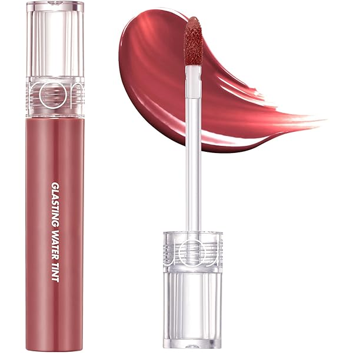
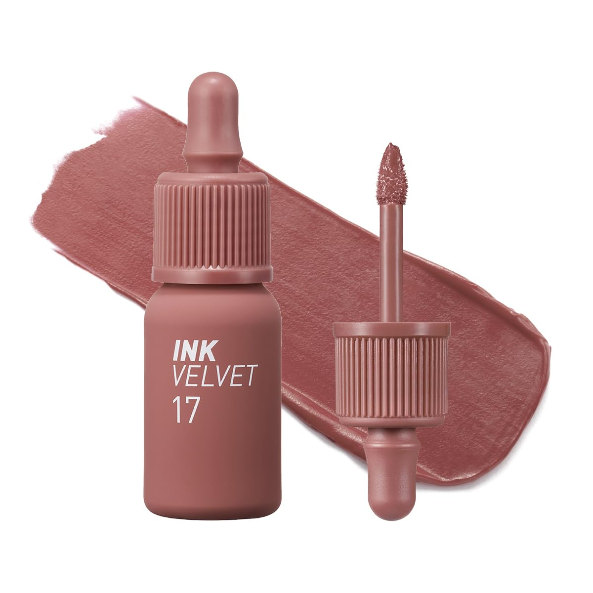
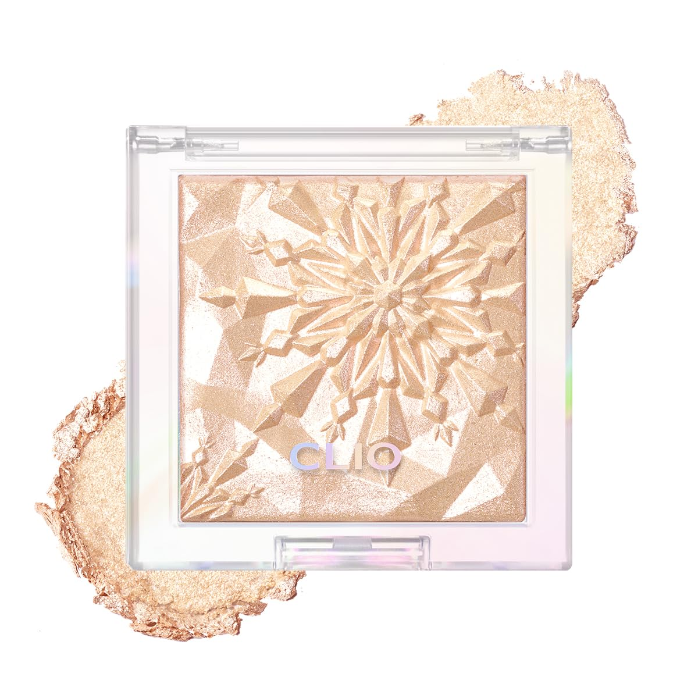
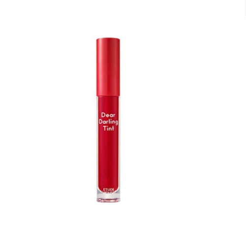
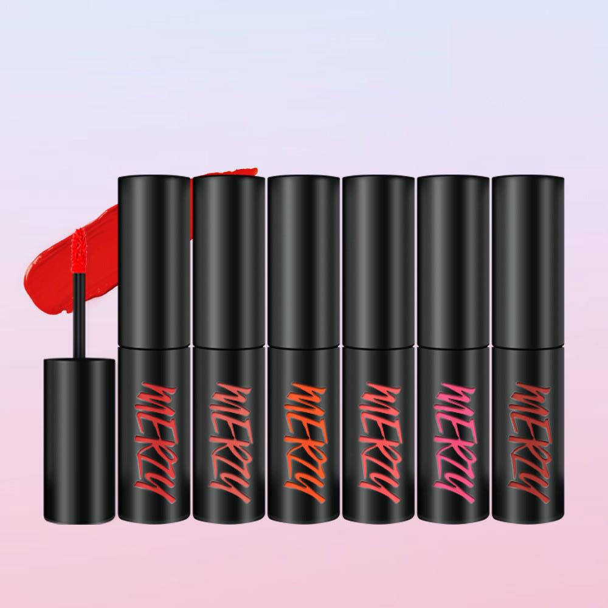

Home › Korean Lip Tint
6 Best Korean Lip Tints for Glass Skin (2026)
The Korean lip tints I reach for daily
I rounded up 6 Korean lip tint worth knowing — the ones K-beauty fans keep coming back to. Real products, honest notes, and roughly what they cost. Prices are approximate; check the retailer for today's price.

Juicy Lasting Tint
Glossy, long-lasting tint in super wearable shades.
A glossy, juicy tint with long wear and an addictive shade range. One of the most recommended K-beauty lip tints for everyday use.
≈ $9.0 (approx) · Ships worldwide
Check price on Amazon →
Glasting Water Tint
Watery, glassy finish that feels weightless.
A watery tint with a glassy, wet-look finish that feels weightless. Great for a fresh, my-lips-but-better look.
≈ $10.0 (approx) · Ships worldwide
Check price on Amazon →
Ink the Velvet Lip Tint
Iconic velvet tint with bold, lasting color.
The iconic velvet tint known for bold, lasting color in a lightweight formula. A K-beauty classic that keeps selling out.
≈ $9.0 (approx) · Ships worldwide
Check price on Amazon →
Melting Sheer Balm Tint
Sheer, balmy tint for an effortless everyday lip.
A sheer, balmy tint that adds soft color with a comfortable feel. Perfect for an effortless, low-maintenance everyday lip.
≈ $12.0 (approx) · Ships worldwide
Check price on Amazon →
Dear Darling Water Gel Tint
Juicy gel tint for a fresh, stained look.
A juicy water-gel tint that leaves a fresh, stained look as it wears. Budget-friendly and beginner-friendly.
≈ $8.0 (approx) · Ships worldwide
Check price on Amazon →
The First Velvet Tint
Smooth velvet tint with rich color payoff.
A smooth velvet tint with rich, one-swipe color payoff. A comfortable matte-velvet finish at an easy price.
≈ $9.0 (approx) · Ships worldwide
Check price on Amazon →Save this for your next K-beauty haul
Prices are approximate and pulled from public shopping data; always check the retailer for the current price and shade/size before buying.